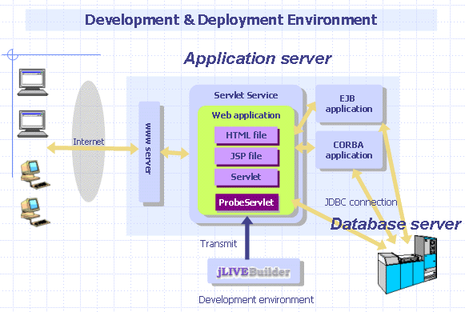

|
2.5 應用程式執行環境與機制 (Application environment and mechanism) 應用程式執行環境 (runtime environment) 系統設計師可以透過以下章節，了解 jLIVE Builder™ 應用程式的執行環境與系統機制。 應用程式執行環境 -- 說明應用程式在網際網路及區域網路所在位置，及適用於客戶端 (client) ，應用伺服器 (application server) 及資料庫伺服器 (database server) 的作業環境與軟體。瀏覽器啟動執行機制 -- 詳細的描述從使用者端透過瀏覽器執行時，jLIVE Builder™ 系統作業的各個程序與流程。開發與佈建的應用伺服器環境 -- 可以了解 jLIVE Builder™ 在應用伺服器上所扮演的角色，以及可與 Java™ Container 上的 HTML、JSP 協同處理應用伺服器的服務需求。jLIVE middle™ ware 在 J2EE 應用伺服器的運作 -- jLIVE middle ware 系統名稱為 ProbeServlet，是以 Java Servlet™ 所開發的 servlet class，ProbeServlet 除了提供 jLIVE Builder™ 內建服務需求外，可以經由 jLIVE Builder™ Servlet Call event 與 J2EE 上其他服務伺服器溝通與運作。 應用程式執行環境 (runtime environment) jLIVE Builder™ 應用程式可以執行在網際網路及區域網路中。使用者端可以瀏覽器或 Java Web Start™ 或下載可執行 Java™ Jar 檔執行，程式執行後會連結應用伺服器 (application server) ，由應用伺服器提供後端資料庫伺服器及其他系統資源存取服務。jLIVE Builder™ 的使用者端可以是任何支援 Java™ 環境的作業系統；jLIVE Builder™ 的中間層 (middle tier) 可以安裝在任何支援 Java Servlet™ 的應用伺服器；透過 JDBC jLIVE Builder™ 可以同時處理各種資料庫系統。 瀏覽器啟動執行機制 (browser enabled HTML mechanism) jLIVE Builder™ 在開發完成階段，可以產生三種的應用程式 獨立執行的應用程式 (standalone executable JAR) 和一般的視窗 (*.exe) 程式是一模一樣的，只不過檔名是 Java™ 的可執行檔 *.jar 。以 Java web start ™ 啟動執行(web start JNLP) (Java Network Launching Protocol) 的程式和獨立執行的應用程式 (standalone executable JAR) 一樣 ，其分別是受 Java web start™ 的控管且可透過 Java web start ™ 自動更新版本。三種應用程式在網際網路上啟動執行後，應用程式皆以多層式 的架構 (n-tiers) 運作。 瀏覽器啟動 (browser enabled) 的應用程式，是由客戶端 (client) 的瀏覽器，經由 HTTP 連結到 Web 伺服器 (server) 的HTML 檔，而由 Java™ 內嵌在 HTML 的小程式段 (Java™ applet) 啟動應用程式。詳細的流程如下 :
當客戶端 (client) 在瀏覽器，以 HTTP 向 Web 伺服器要求網頁時，由 Web 伺服器送出內含 Java™ Applet class 標籤 (tag) 的 HTML 網頁，客戶端 (client) 即啟動 Java™ 虛擬機器 (JVM) ，並對 Web 伺服器要求載入 Applet class。當 Applet class 載入實體化 (instantiation) 後，立即載入主畫面，並出現密碼驗證對話視窗，要求客戶端 (client) 登入。客戶端 (client) 的密碼驗證是由 jLIVE™ middle ware 以查驗資料庫的方式處理。當客戶端 (client) 的密碼是合法時，jLIVE™ middle ware 會為客戶端 (client) 建立連結的 Session ，並按指示連結資料庫，回覆客戶端 (client) 時會將客戶端 (client) 的權限一併傳回。客戶端 (client) 的 Java™ class 會根據權限，控管視窗模組 (form) 的開啟與否，和對該視窗模組 (form) 中 操作資料庫新增、刪除、修改、查詢以及列印的元件 (components)，自動將其致能或失效 (enable or disable)。客戶端 (client) 在主視窗畫面啟動後，即可像操作任何視窗程式一樣，以系統選單、按鍵、圖示啟動各種作業。當呼叫視窗模組 (form) ，Web 伺服器回傳視窗模組 (form) 的 Java™ class；當視窗模組 (form) 中存取資料庫或系統資源時，則由 jLIVE™ middle ware 負責服務。此即由客戶端 (client) 發出請求，中間層 jLIVE™ middle ware 負責連結、存取後端資料庫伺服器 (database server)的三層架構。 瀏覽器啟動應用程式特性 (browser enabled features)
開發及佈建的應用伺服器環境 (application server environment) 設計師在使用 jLIVE Builder™ 設計程式時，與一般使用者在執行由 jLIVE Builder™ 所開發的應用程式是一模一樣，所以設計師能即時知道應用程式，在真實環境下執行的結果。 jLIVE ™ middle ware 的 class 名稱為 ProbeServlet，是以 Java Servlet™ 所開發的。在應用伺服器上與 HTML、JSP 提供系統服務，只不過 ProbeServlet 所服務的客戶端 (client) 是 jLIVE Builder™ 的應用程式。所以 jLIVE Builder™ 可以與 HTML 、ASP、JSP 、PHP 協同開發網際網路上的應用與服務。佈建 jLIVE Builder™ 應用環境只要將 ProbeServlet 安裝到應用伺服器上即可。程式設計、更新、維護 ，可以透過 jLIVE Builder™ 內建的線上更新 (online update) 提交 (transmit) 到應用伺服器。  jLIVE middle™ ware 在 J2EE 應用伺服器的運作 (service route in application server (J2EE)) ProbeServlet 是 jLIVE ™ middle ware 的 class 名稱，在應用伺服器以 Java Servlet™ 機制運作，是完全相容與 Java™ J2EE 規格。ProbeServlet 在接到資料庫存取請求時，以 JDBC 連結資料庫並調整回應資料量，快速提供使用者端的需求。jLIVE Builder™ 提供內建 Servlet Call event 用與其他 J2EE 應用伺服器上的資源協同運作。例如：Java™ EJB 的開發者可以透過 Servlet 呼叫 EJB 且將 EJB 的結果回傳至 jLIVE Builder™ 使用者端 。
Copyright © 2001~ 2004 Probe Technology . All Rights Reserved. Questions, comments, and suggestions to Service@probe.com.tw |